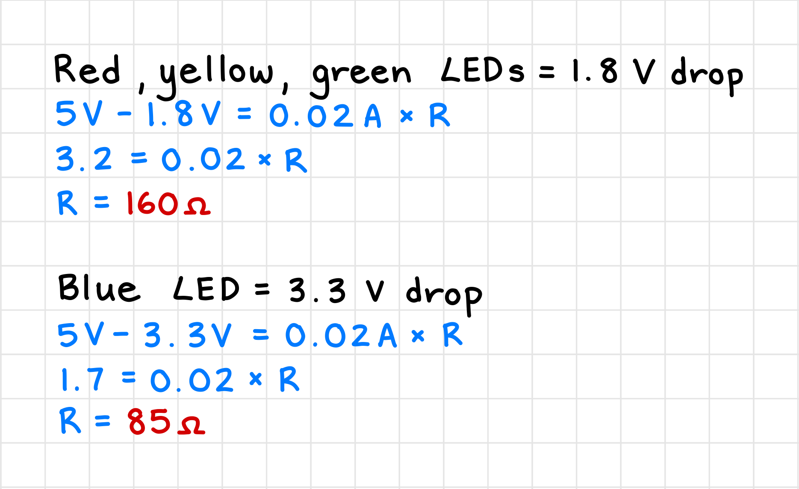
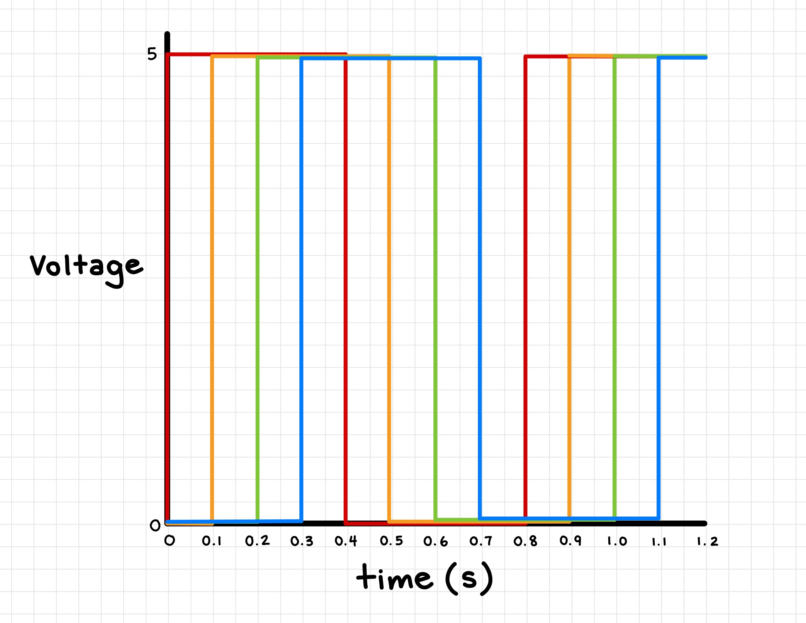

Project Overview
For my assignment 1 project, I built a circuit that makes 4 LEDs blink in a wave pattern using an Arduino. This page documents my:
For my assignment 1 project, I built a circuit that makes 4 LEDs blink in a wave pattern using an Arduino. This page documents my:
This assignment required that the circuit use 3 or more LEDs. The current flowing through the
LEDs should be limited using resistors, and each LED should also be able to blink independently.
During one of the lectures in class, we learned about circuits being in series vs. in parallel.
When a circuit is in series, the current has to flow through each component one after another,
meaning if one component fails, the entire circuit fails. On the other hand, when a circuit is in parallel,
the current can flow through multiple paths, so if one component fails, the rest of the circuit can still function.
I decided to build a circuit with 4 LEDs in parallel, as this would allow each LED to blink independently
without affecting the others. I also wanted to make the LEDs blink in a wave-like pattern, so I planned to have
the LEDs turn on with a short delay in between each, and then all turn off with a similar delay.
Below is a schematic I drew that represents my circuit. At the top of my schematic are the 4 digital pins
I would use to give power to the breadboard. Each pin then connects to a resistor, which limits the current as
it connects to a LED. Finally, the bottom of my schematic represents when all 4 LEDs connect to join with
the ground pin of the Arduino.
With my schematic complete, it was now time to implement it as a circuit on my breadboard. I grabbed a red, yellow,
green, and blue LED, 4 resistors (the next section explains how I calculated the values),
and some jumper wires from my Arduino starter kit and started building the circuit of one LED first.
I used a black wire to connect the GND pin on the Arduino to the the negative row on my breadboard.
I then used a red wire to connect the 5V pin on the Arduino to one of the inside rows of the breadboard, and along
that same row number, I placed one end of a resistor. I used the other end of the resistor to determine
where to place the longer leg of the red LED, as this leg needed to be connected to the positive voltage.
The other leg of the LED needed to be connected to the ground, so I used one more wire to connect the
shorter leg to the ground row on my breadboard.
 To test if my circuit was working, I gave power to the Arduino by connecting it to my laptop via USB, and I saw that
the red LED had successfully turned on. I repeated the same steps for the other three LEDs, but instead of using the 5V pin
for power, I used digital pins 8, 9, 10, and 11 on the Arduino to connect to the red, yellow, green, and blue LEDs respectively.
To test if my circuit was working, I gave power to the Arduino by connecting it to my laptop via USB, and I saw that
the red LED had successfully turned on. I repeated the same steps for the other three LEDs, but instead of using the 5V pin
for power, I used digital pins 8, 9, 10, and 11 on the Arduino to connect to the red, yellow, green, and blue LEDs respectively.
Overall, my circuit runs 4 LEDs in parallel. Each LED is connected to a digital pin on the
Arduino (pins 8-11) and their current is limited with a resistor. The other end of each LED is connected to
the ground pin on the Arduino.

To calculate what resistance to use for each LED, I used Ohm's law (V = IR) to solve for R. In class, we learned that diodes (which LEDs are a type of) have a voltage drop, meaning some volts are "lost" when the diode is operating. Thus, I looked up the voltage drop for each LED color and subtracted that from the Arduino's operating voltage of 5V. Alongside the desired current of 20mA, I was able to calculate the resistance needed for each LED.
Finally, I used the calculated resistance to find the resistor with the nearest value. We also learned that it's better to shoot a little higher if needed, so I found the next highest resistor that came in my Arduino starter kit. In the end, I used a 220 ohm resistor for the red, yellow, and green LEDs and a 100 ohm resistor for the blue LED.
I started my code with the built-in example sketch "Blink" provided by the Arduino IDE. Originally, it only had one pinMode set to pin 13, and the loop function turned the LED on and off with a 1 second delay. I modified the code to initialize 4 digital pins (8-11) as outputs for my 4 LEDs, and in the loop, I created two functions to turn each LED on and off in ascending order with a 0.1 second delay in between. This created a wave-like blinking pattern at a faster speed than the original sketch.
// the setup function runs once when you press reset or power the board
void setup() {
// initialize digital pins as an output.
pinMode(8, OUTPUT); // red LED
pinMode(9, OUTPUT); // yellow LED
pinMode(10, OUTPUT); // green LED
pinMode(11, OUTPUT); // blue LED
}
// the loop function runs over and over again forever
void loop() {
// turns on each LED from pins 8 to 11 in ascending order with a 0.1 second delay
for (int i = 8; i < 12; i++) {
digitalWrite(i, HIGH); // turn the LED on (HIGH is the voltage level)
delay(100); // wait for 0.1 sec
}
// turns off each LED from pins 8 to 11 in ascending order with a 0.1 second delay
for (int i = 8; i < 12; i++) {
digitalWrite(i, LOW); // turn the LED off by making the voltage LOW
delay(100); // wait for 0.1 sec
}
}
You can download my full code as an Arduino file here!
With everything complete, I uploaded my code to the Arduino and powered it on.
The circuit worked as expected (yay :D),
and you can see the final result in the GIFs below.

1: Draw a graph where the X axis is time and the Y axis is voltage across the LEDs. Draw a line for each of your LEDs.
The graph below shows the voltage across each LED over time. The color of the lines represents the color of the LEDs. All LEDs turn on (at 5V) for 0.4 seconds before turning off (at 0V) and waiting for another 0.4 seconds, and they are offset by 0.1 second intervals to create the wave pattern. The entire pattern repeats between 0 and 0.8 seconds.
2: How many LEDs could you blink independently with your Arduino? How much current would that draw?
LEDs can only blink independently if they are connected to a unique digital pin.
Since the Arduino has 14 digital pins, I could blink up to 14 LEDs independently.
As for how much current that would draw, I can calculate that with:
14 LEDs * 20mA each = 280mA total current drawn.
3: How many LEDs could you blink with your Arduino if only one were to be on at once? (optional)
I'm not too sure, so I'm going to skip this question :p
4: How fast do you need to blink your LEDs until you no longer can tell that they are blinking?
I tested this out by shortening the delays written in my code. At 5 milliseconds, the LEDs were blinking so fast that I couldn't see the wave pattern anymore. At 3 milliseconds, the LEDs didn't turn off completely but became slightly dimmer. Finally, at 2 milliseconds, the LEDs appeared to be constantly on.
5: Did you use AI tools in completing this assignment? If yes, please provide details on how/when, as well as a brief reflection. If no, you can either leave this question blank, or provide other information if you'd like.
I did not intentially use any generative AI like ChatGPT for this assignment. However, I did accept a lot of the suggestions given by CoPilot, which is Visual Studio Code's AI tool. It helped me auto-complete code snippets, fix formatting mistakes, and even write out entire sentences at times.